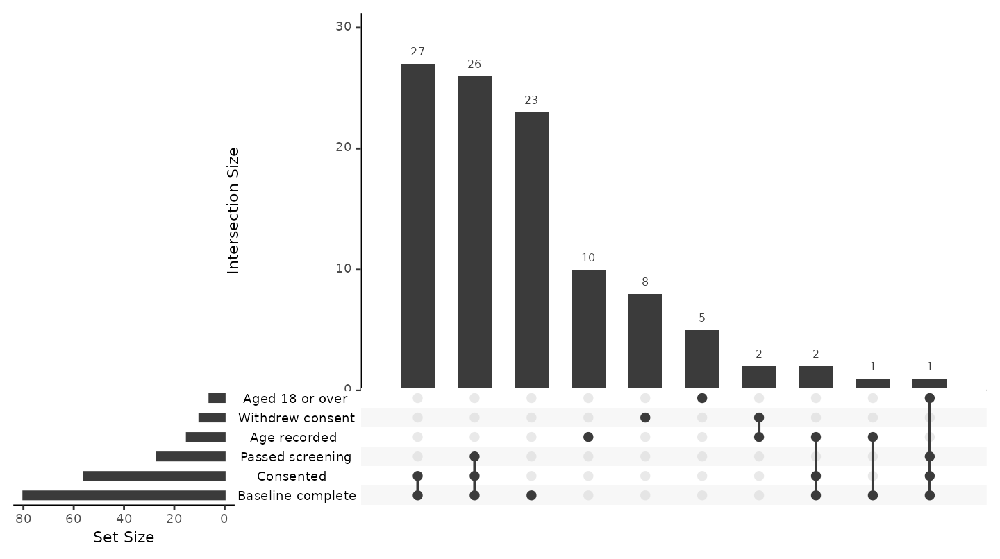

Describing who was excluded
Source:vignettes/articles/describing-exclusions.Rmd
describing-exclusions.Rmd
library(cohortflow)
dat <- mock_parallel_rct(n_participants = 300, seed = 2024)
crit <- cf_criteria() |>
include(~ !is.na(age), label = "Age recorded", reason = "Age missing", category = "Age") |>
include(~ age >= 18, label = "Aged 18 or over", reason = "Under 18", category = "Age") |>
include(~ eligible_screen, label = "Passed screening", reason = "Failed screening") |>
include(~ !is.na(consent_date), label = "Consented", reason = "Did not consent") |>
randomise(by = "participant_id", arms = "arm") |>
exclude(~ withdrew, label = "Withdrew consent") |>
include(~ baseline_complete, label = "Baseline complete", reason = "Baseline incomplete")
flow <- apply_criteria(dat, crit, id = "participant_id")An attrition table says how many people each criterion removed. Readers and reviewers also ask who was removed: did the exclusions change the make-up of the cohort, and do the reasons overlap? This article covers three tools for that:
-
as_characteristics_table(): a “Table 1” with one column per step. -
criteria_status(): every row’s result on every criterion, for auditing and for plotting overlapping reasons. -
stack_cohorts(): the cohort at each step, stacked for other summary-table packages.
Table 1 at every step
as_characteristics_table() summarises the chosen
variables for the cohort remaining after each step. Numeric variables
show the mean (SD), the median [Q1, Q3], or both; categorical and
logical variables show n (%); a “Missing” row appears when there are
missing values.
as_characteristics_table(
flow,
vars = c("age", "sex", "ethnicity"),
var_labels = c(age = "Age, years", sex = "Sex", ethnicity = "Ethnicity"),
numeric = c("mean_sd", "median_iqr"),
backend = "gt"
)| Characteristic | Assessed for eligibility (n = 300) | Age recorded (n = 285) | Aged 18 or over (n = 279) | Passed screening (n = 253) | Consented (n = 226) | Withdrew consent (n = 218) | Baseline complete (n = 195) |
|---|---|---|---|---|---|---|---|
| Age, years | |||||||
| Mean (SD) | 46.8 (14.5) | 46.8 (14.5) | 47.6 (13.6) | 47.6 (13.5) | 47.7 (13.7) | 47.8 (13.7) | 47.4 (13.2) |
| Median [IQR] | 47.0 [37.0, 56.0] | 47.0 [37.0, 56.0] | 47.0 [38.0, 56.0] | 47.0 [38.0, 56.0] | 47.0 [38.0, 56.0] | 47.0 [38.0, 56.0] | 47.0 [38.0, 56.0] |
| Missing | 15 (5.0%) | 0 (0.0%) | 0 (0.0%) | 0 (0.0%) | 0 (0.0%) | 0 (0.0%) | 0 (0.0%) |
| Sex | |||||||
| F | 146 (48.7%) | 139 (48.8%) | 135 (48.4%) | 125 (49.4%) | 114 (50.4%) | 111 (50.9%) | 103 (52.8%) |
| M | 144 (48.0%) | 136 (47.7%) | 135 (48.4%) | 120 (47.4%) | 106 (46.9%) | 101 (46.3%) | 86 (44.1%) |
| O | 10 (3.3%) | 10 (3.5%) | 9 (3.2%) | 8 (3.2%) | 6 (2.7%) | 6 (2.8%) | 6 (3.1%) |
| Ethnicity | |||||||
| Asian | 40 (13.3%) | 38 (13.3%) | 37 (13.3%) | 33 (13.0%) | 27 (11.9%) | 26 (11.9%) | 23 (11.8%) |
| European | 193 (64.3%) | 183 (64.2%) | 180 (64.5%) | 165 (65.2%) | 149 (65.9%) | 144 (66.1%) | 127 (65.1%) |
| Maori | 38 (12.7%) | 36 (12.6%) | 35 (12.5%) | 33 (13.0%) | 29 (12.8%) | 27 (12.4%) | 26 (13.3%) |
| Other | 7 (2.3%) | 7 (2.5%) | 7 (2.5%) | 5 (2.0%) | 5 (2.2%) | 5 (2.3%) | 5 (2.6%) |
| Pacific | 22 (7.3%) | 21 (7.4%) | 20 (7.2%) | 17 (6.7%) | 16 (7.1%) | 16 (7.3%) | 14 (7.2%) |
randomise() steps are left out by default, since they
remove nobody.
Choosing the columns
steps picks and orders the columns, using the same
selectors as cohort(): a step number (0 is the
starting data), a step label or a category name. When you mix numbers
and labels, put them in a list(), since c()
would turn the numbers into text:
as_characteristics_table(
flow,
vars = c("age", "sex"),
steps = list(0, "Consented", "Baseline complete"),
backend = "gt"
)| Characteristic | Assessed for eligibility (n = 300) | Consented (n = 226) | Baseline complete (n = 195) |
|---|---|---|---|
| age | |||
| Mean (SD) | 46.8 (14.5) | 47.7 (13.7) | 47.4 (13.2) |
| Missing | 15 (5.0%) | 0 (0.0%) | 0 (0.0%) |
| sex | |||
| F | 146 (48.7%) | 114 (50.4%) | 103 (52.8%) |
| M | 144 (48.0%) | 106 (46.9%) | 86 (44.1%) |
| O | 10 (3.3%) | 6 (2.7%) | 6 (3.1%) |
The people removed at each step
excluded = TRUE describes the rows removed at
each step instead. This is the usual supplementary table comparing
excluded and included participants:
as_characteristics_table(
flow,
vars = c("age", "sex"),
excluded = TRUE,
backend = "gt"
)| Characteristic | Age recorded (n = 15) | Aged 18 or over (n = 6) | Passed screening (n = 26) | Consented (n = 27) | Withdrew consent (n = 8) | Baseline complete (n = 23) |
|---|---|---|---|---|---|---|
| age | ||||||
| Mean (SD) | — | 10.2 (5.0) | 47.4 (14.6) | 46.3 (11.4) | 46.2 (15.2) | 51.4 (17.1) |
| Missing | 15 (100.0%) | 0 (0.0%) | 0 (0.0%) | 0 (0.0%) | 0 (0.0%) | 0 (0.0%) |
| sex | ||||||
| F | 7 (46.7%) | 4 (66.7%) | 10 (38.5%) | 11 (40.7%) | 3 (37.5%) | 8 (34.8%) |
| M | 8 (53.3%) | 1 (16.7%) | 15 (57.7%) | 14 (51.9%) | 5 (62.5%) | 15 (65.2%) |
| O | 0 (0.0%) | 1 (16.7%) | 1 (3.8%) | 2 (7.4%) | 0 (0.0%) | 0 (0.0%) |
The people excluded for “Aged 18 or over” have a mean age of about 10, as they should: a quick check that the criterion did what was intended.
As data
as_characteristics_tibble() returns the same numbers.
The long form has one row per variable, level and step, with separate
count, percentage and display columns, ready for your own formatting or
calculation:
long <- as_characteristics_tibble(flow, vars = "sex", steps = list(0, "Baseline complete"))
long
#> # A tibble: 6 × 8
#> variable level step label n count pct stat
#> <chr> <chr> <int> <chr> <int> <int> <dbl> <chr>
#> 1 sex F 0 Assessed for eligibility 300 146 48.7 146 (48.7%)
#> 2 sex F 7 Baseline complete 195 103 52.8 103 (52.8%)
#> 3 sex M 0 Assessed for eligibility 300 144 48 144 (48.0%)
#> 4 sex M 7 Baseline complete 195 86 44.1 86 (44.1%)
#> 5 sex O 0 Assessed for eligibility 300 10 3.3 10 (3.3%)
#> 6 sex O 7 Baseline complete 195 6 3.1 6 (3.1%)Use wide = TRUE for one column per step, as
displayed.
Every row on every criterion
The cascade records only the first criterion each person
failed. Someone under 18 who also never consented is counted only under
age, and their missing consent is never recorded.
criteria_status() shows the full picture, with one row per
person and one column per criterion.
In the default cumulative mode it mirrors the
cascade: TRUE = reached the step and passed,
FALSE = removed there, NA = never reached
it.
criteria_status(flow)
#> # A tibble: 300 × 7
#> participant_id `Age recorded` `Aged 18 or over` `Passed screening` Consented
#> <chr> <lgl> <lgl> <lgl> <lgl>
#> 1 P0001 TRUE TRUE TRUE FALSE
#> 2 P0002 TRUE TRUE TRUE TRUE
#> 3 P0003 TRUE TRUE TRUE TRUE
#> 4 P0004 TRUE TRUE TRUE TRUE
#> 5 P0005 FALSE NA NA NA
#> 6 P0006 TRUE FALSE NA NA
#> 7 P0007 TRUE TRUE FALSE NA
#> 8 P0008 TRUE TRUE TRUE TRUE
#> 9 P0009 TRUE TRUE TRUE TRUE
#> 10 P0010 TRUE TRUE TRUE TRUE
#> # ℹ 290 more rows
#> # ℹ 2 more variables: `Withdrew consent` <lgl>, `Baseline complete` <lgl>In independent mode, every criterion is evaluated against everyone, regardless of the order of the steps. That shows how much the reasons overlap. The cascade puts 27 removals at “Consented”, but 56 people never consented: the other 29 had already been removed for other reasons.
fails <- criteria_status(flow, mode = "independent", sets = "fail",
na = "false", as = "matrix")
# How many people fail each criterion
colSums(fails)
#> Age recorded Aged 18 or over Passed screening Consented
#> 15 6 27 56
#> Withdrew consent Baseline complete
#> 10 80
# How many criteria each person fails
table(failed = rowSums(fails))
#> failed
#> 0 1 2 3 4
#> 195 46 30 28 1The arguments shape the result for whatever comes next:
| Argument | Choices |
|---|---|
sets |
"pass" (TRUE = met the criterion) or
"fail" (TRUE = a reason for exclusion) |
na |
"keep", "false" (treat not-assessed or
NA as FALSE) or "drop" rows with
any NA
|
names |
Columns named by step "label" or "step"
number |
keep_data |
Also carry the original data columns |
as |
"tibble", "data.table" or a logical
"matrix"
|
Grouped steps (group_include(),
group_exclude(), select_within()) depend on
who else is in the group, so in independent mode they can give a
different answer than in the cascade, where earlier steps had already
removed some group members.
Plotting overlapping reasons
The matrix plugs straight into set-overlap plots such as UpSetR, ComplexUpset or eulerr:
UpSetR::upset(as.data.frame(fails * 1), nsets = ncol(fails), order.by = "freq")
Other summary-table packages
stack_cohorts() returns the cohort at each step stacked
into one data frame with a step column, which is the shape
that gtsummary
and similar packages expect:
stacked <- stack_cohorts(flow, steps = list(0, "Consented", "Baseline complete"))
table(stacked$step)
#>
#> Assessed for eligibility Consented Baseline complete
#> 300 226 195
gtsummary::tbl_summary(stacked, by = step, include = c(age, sex, ethnicity))| Characteristic |
Assessed for eligibility N = 3001 |
Consented N = 2261 |
Baseline complete N = 1951 |
|---|---|---|---|
| age | 47 (37, 56) | 47 (38, 56) | 47 (38, 56) |
| Unknown | 15 | 0 | 0 |
| sex | |||
| F | 146 (49%) | 114 (50%) | 103 (53%) |
| M | 144 (48%) | 106 (47%) | 86 (44%) |
| O | 10 (3.3%) | 6 (2.7%) | 6 (3.1%) |
| ethnicity | |||
| Asian | 40 (13%) | 27 (12%) | 23 (12%) |
| European | 193 (64%) | 149 (66%) | 127 (65%) |
| Maori | 38 (13%) | 29 (13%) | 26 (13%) |
| Other | 7 (2.3%) | 5 (2.2%) | 5 (2.6%) |
| Pacific | 22 (7.3%) | 16 (7.1%) | 14 (7.2%) |
| 1 Median (Q1, Q3); n (%) | |||
A person appears once for every step they survived, so the columns are not independent samples. Use these tables to describe the cohort, not to test for differences between columns.